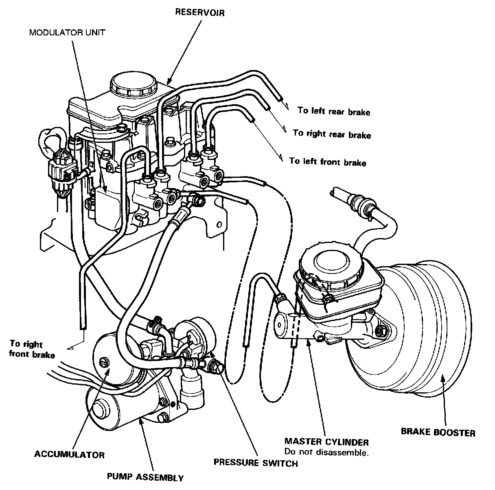

Operation CHARM
: Car repair manuals for everyone.
Home
>>
Acura
>>
1992
>>
Legend Sedan V6-3206cc 3.2L SOHC FI
>>
Repair and Diagnosis
>>
Brakes and Traction Control
>>
Hydraulic System
>>
Locations
Hydraulic System: Locations

Hydraulic System Index
CAUTION:
-
Do not spill brake fluid on the car; it may damage the paint; if brake fluid does contact the paint, wash it off immediately with water
.